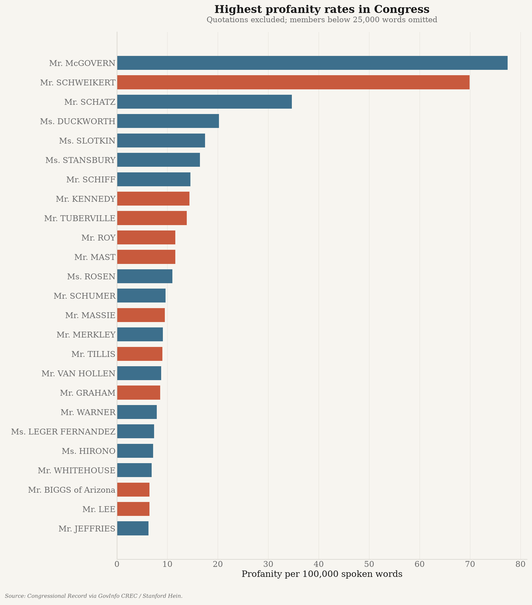
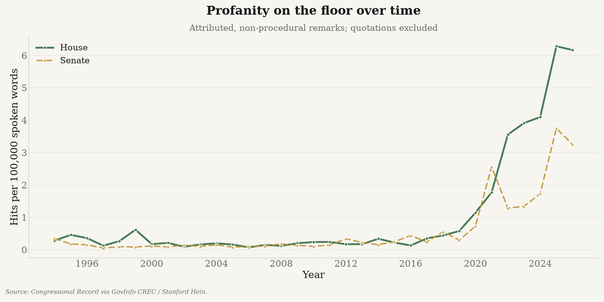

Who swears most on the floor of the U.S. Congress, measured from the official record — Congress 119. Rebuilt automatically; last updated 2026-08-02T09:25:19+00:00.

| # | Member | Party | State | Chamber | Per 100k words | Hits | Quoted (excl.) | Words |
|---|---|---|---|---|---|---|---|---|
| 1 | Mr. McGOVERN | D | MA | House | 69.3 | 125 | 0 | 180,368 |
| 2 | Mr. SCHWEIKERT | R | AZ | House | 66.0 | 129 | 0 | 195,331 |
| 3 | Mr. SCHATZ | D | HI | Senate | 35.0 | 33 | 2 | 94,279 |
| 4 | Ms. DUCKWORTH | D | IL | Senate | 14.8 | 5 | 0 | 33,866 |
| 5 | Ms. STANSBURY | D | NM | House | 14.2 | 7 | 0 | 49,231 |
| 6 | Ms. SLOTKIN | D | MI | Senate | 14.0 | 4 | 0 | 28,673 |
| 7 | Mr. TUBERVILLE | R | AL | Senate | 12.4 | 8 | 0 | 64,566 |
| 8 | Mr. KENNEDY | R | LA | Senate | 12.4 | 14 | 0 | 113,329 |
| 9 | Mr. SCHIFF | D | CA | Senate | 12.2 | 14 | 0 | 114,488 |
| 10 | Ms. JAYAPAL | D | WA | House | 11.6 | 3 | 0 | 25,865 |
| 11 | Ms. ROSEN | D | NV | Senate | 11.4 | 5 | 0 | 44,052 |
| 12 | Mr. MERKLEY | D | OR | Senate | 8.6 | 25 | 2 | 290,560 |
| 13 | Mr. VAN HOLLEN | D | MD | Senate | 8.6 | 11 | 0 | 127,881 |
| 14 | Mr. SCHUMER | D | NY | Senate | 8.1 | 33 | 4 | 408,682 |
| 15 | Mr. GRAHAM | R | SC | Senate | 7.5 | 5 | 0 | 66,881 |
| 16 | Mr. MAST | R | FL | House | 7.4 | 6 | 0 | 81,487 |
| 17 | Ms. LEGER FERNANDEZ | D | NM | House | 6.9 | 2 | 0 | 28,845 |
| 18 | Mr. BIGGS of Arizona | R | AZ | House | 6.7 | 2 | 0 | 29,646 |
| 19 | Mr. JEFFRIES | D | NY | House | 6.4 | 3 | 0 | 46,620 |
| 20 | Mr. WHITEHOUSE | D | RI | Senate | 6.3 | 12 | 5 | 190,705 |
| 21 | Mr. ROY | R | TX | House | 6.2 | 7 | 2 | 113,053 |
| 22 | Mr. LEE | R | UT | Senate | 6.2 | 9 | 0 | 145,658 |
| 23 | Mr. WARNER | D | VA | Senate | 5.3 | 2 | 0 | 37,981 |
| 24 | Mr. TILLIS | R | NC | Senate | 4.5 | 2 | 0 | 44,555 |
| 25 | Mr. KIM | D | NJ | Senate | 4.0 | 2 | 0 | 49,443 |
Ranked by rate, not raw count, so prolific speakers are not penalised. Minimum 25,000 attributed words. 25 of 544 members met the threshold.

Machine-readable output: leaderboard.json, timeseries.json, meta.json.